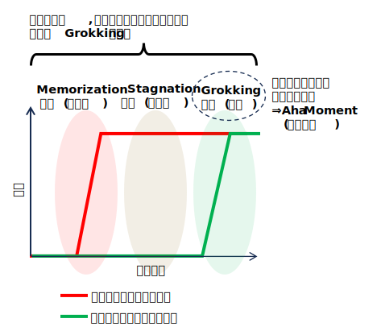

Aha Moment (アハ体験)
モデルが長期間停滞した学習状態から、ある瞬間に突然、飛躍的なパフォーマンス向上や、より高度な推論能力を示すようになる現象。人間が新しい概念を突然理解する「ひらめきの瞬間」に似ている。
Grokkingとの関係

具体例
- 強化学習
アルファ碁（AlphaGo）のように、長期間の試行錯誤で目立った改善が見られなかったモデルが、ある時を境に、飛躍的に上達して最高レベルのパフォーマンスを発揮する。
- 大規模言語モデル（LLM）
- 一貫した思考連鎖の生成
モデルが、複数のステップにわたる一貫した思考の連鎖を生成できるようになる瞬間。
- 自己学習
モデル自身が思考連鎖を生成・洗練する能力を獲得する瞬間。
- 自己修正
推論の過程で間違いに気づき、人間のように自ら考え直して解決策を導き出すようになる瞬間。
「Wait, wait. Wait. That's an aha moment I can flag here.」
(DeepSeek-R1：強化学習によるLLMの推論能力の促進)
- パターン認識
画像認識や音声認識において、モデルがランダムな推測から、特定のパターンを正確に認識する段階へと移行する瞬間。
なぜAha Momentが起きるのか？
この現象のメカニズムはまだ完全に解明されていないが、AIが単純な試行錯誤から、より高次元の抽象的な概念を捉える「解読（deciphering）」の段階に移行している可能性が示唆されている。